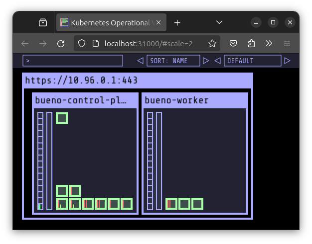
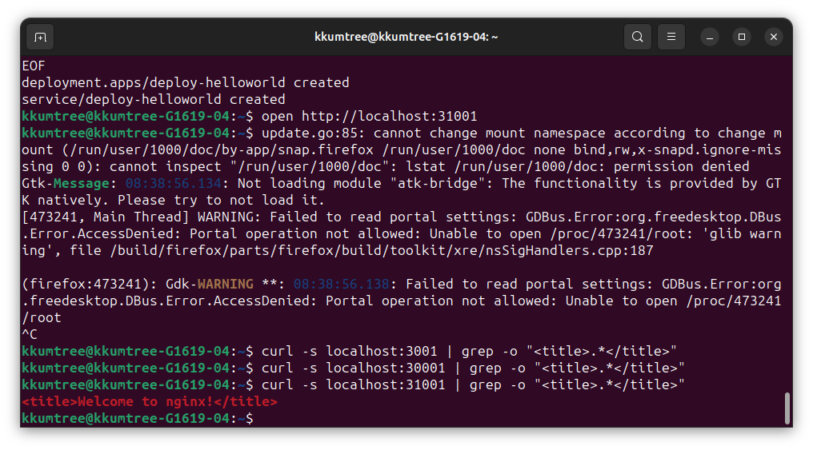

톺아보다(우리말샘) 는 의외로 표준어라고 합니다.
KIND 설치 이후에 기본적인 내용을 살펴봅니다.
CloudNet@에서 진행하고 있는 K8s Advanced Network Study(이하, KANS)를 통해 학습한 내용을 정리합니다.
0. $KUBECONFIG
-
$KUBECONFIG 환경변수가 없을 경우:
보통은~/.kube디렉토리가 생성됩니다.
확인해보니, config 값과 더불어,cache디렉토리도 확인할 수 있었습니다.❯ find ~/.kube -maxdepth 2 -type f -exec ls -ld "{}" \; -rw------- 1 kkumtree kkumtree 44 Sep 3 21:31 /home/kkumtree/.kube/config ❯ find ~/.kube -maxdepth 2 -type d -exec ls -ld "{}" \; drwxr-x--- 3 kkumtree kkumtree 4096 Sep 3 21:31 /home/kkumtree/.kube drwxr-x--- 4 kkumtree kkumtree 4096 Sep 3 21:11 /home/kkumtree/.kube/cache drwxr-x--- 5 kkumtree kkumtree 4096 Sep 3 21:28 /home/kkumtree/.kube/cache/discovery drwxr-x--- 3 kkumtree kkumtree 4096 Sep 3 21:28 /home/kkumtree/.kube/cache/http -
KIND용 $KUBECONFIG 설정:
그래서 아래처럼, 경로를 만들고 $KUBECONFIG 환경변수를 설정해주었습니다.mkdir -p ~/.kind export KUBECONFIG=~/.kind/kubeconfig -
(참고) 과거에 변수로 좀 곯머리를 앓았다보니, 쉘스크립팅 예제를 짜봤습니다.
https://github.com/kkumtree/kans/blob/week2/kind-basic/kubeconfig_manager.sh❯ pwd /home/kkumtree/Documents/github/kans/kind-basic ❯ ll total 4.0K -rwxrwxr-x 1 kkumtree kkumtree 1.1K Sep 2 22:49 kubeconfig_manager.sh ❯ . ./kubeconfig_manager.sh ============================== | kubeconfig manager for kind ------------------------------ | $HOME: $$/home/kkumtree$$ | $KUBECONFIG: $$$$ ============================== (Press Enter to confirm OR type custom path) kubeconfig for kind [/home/kkumtree/.kind/kubeconfig]: env KUBECONFIG is set to: $$/home/kkumtree/.kind/kubeconfig$$ ❯ . ./kubeconfig_manager.sh env KUBECONFIG is unset
1. KIND 첫 구동
-
KIND는 이름 값대로 컨테이너 이미지를 사용합니다.
그래서, 이미지가 로컬에 없다면 받는데 시간이 소요됩니다.❯ docker images REPOSITORY TAG IMAGE ID CREATED SIZE kindest/node v1.30.4 ea9c94202240 2 weeks ago 991MB -
새로운 터미널을 한 쪽에 열어, 어떻게 작동하는지 살펴보기 위한 준비를 합니다.
watch kubectl get pod -A --sort-by=.metadata.creationTimestamp -
사용 이미지 지정:
kindest/node:v1.30.4
최신버전인v1.31은 앞으로 적용해볼 서비스들과 호환성을 위해, 버전을 낮춰서 사용합니다.❯ kind create cluster --image kindest/node:v1.30.4 Creating cluster "kind" ... ✓ Ensuring node image (kindest/node:v1.30.4) 🖼 ✓ Preparing nodes 📦 ✓ Writing configuration 📜 ✓ Starting control-plane 🕹️ ✓ Installing CNI 🔌 ✓ Installing StorageClass 💾 Set kubectl context to "kind-kind" You can now use your cluster with: kubectl cluster-info --context kind-kind Thanks for using kind! 😊 -
아래와 같이, control-plane pod 내부에 pod가 순차적으로 올라오는 것을 볼 수 있습니다.
(phase.1) etcd/apiserver/controller-manager/scheduler 가 먼저 올라옵니다.
(phase.2) coredns/kube-proxy 그리고 kindnet, local path provisioner 가 설치됩니다. -
앞에서 다른 터미널로 2초마다
watch로 갱신하도록 시켜둔 상태❯ watch kubectl get pod -A --sort-by=.metadata.creationTimestamp NAMESPACE NAME READY STATUS RESTARTS AGE kube-system etcd-kind-control-plane 1/1 Running 0 7m5s kube-system kube-apiserver-kind-control-plane 1/1 Running 0 7m5s kube-system kube-controller-manager-kind-control-plane 1/1 Running 0 7m5s kube-system kube-scheduler-kind-control-plane 1/1 Running 0 7m5s kube-system coredns-7db6d8ff4d-dtgmb 1/1 Running 0 6m51s kube-system coredns-7db6d8ff4d-zfsp2 1/1 Running 0 6m51s kube-system kindnet-4l5v8 1/1 Running 0 6m51s kube-system kube-proxy-gt6fw 1/1 Running 0 6m51s local-path-storage local-path-provisioner-7d4d9bdcc5-pw5b2 1/1 Running 0 6m51s -
구동 상태에서 kubeconfig 파일은 다음과 같은 구조로 내용을 담고 있음을 알 수 있습니다.
❯ cat ~/.kind/kubeconfig apiVersion: v1 clusters: - cluster: certificate-authority-data: <base64encoded> server: https://127.0.0.1:40305 name: kind-kind contexts: - context: cluster: kind-kind user: kind-kind name: kind-kind current-context: kind-kind kind: Config preferences: {} users: - name: kind-kind user: client-certificate-data: <base64encoded> client-key-data: <base64encoded> -
Control Plane 대상으로 nginx 배포 테스트: Taint가 걸려있지 않아, 정상적으로 배포
kubectl run nginx --image=nginx:stable-alpine kkumtree@kkumtree-G1619-04:~$ kubectl get pod -owide NAME READY STATUS RESTARTS AGE IP NODE NOMINATED NODE READINESS GATES nginx 1/1 Running 0 23s 10.244.0.5 kind-control-plane <none> <none> kubectl describe node kkumtree@kkumtree-G1619-04:~$ kubectl describe node | grep Taints Taints: <none> -
클러스터를 삭제한 후, kubeconfig 파일을 확인해보면, 상세 값들이 지워졌음을 확인할 수 있습니다.
❯ kind delete cluster Deleting cluster "kind" ... Deleted nodes: ["kind-control-plane"] ❯ cat ~/.kind/kubeconfig apiVersion: v1 kind: Config preferences: {}
2. kindnet? local-path-provisioner? 는 무엇인가?
- 문득,
이 두 가지는 뭘까?하고위험한궁금증이 생겨 찾아봤습니다.
(1) kindnet
GitHub/kindnet의 내용을 요약하면,
- 현재, KIND의 기본 CNI 플러그인
모든클러스터 노드가 동일한 서브넷에 속한 환경에서만 작동- 임베디드 ipmasq(IP매스커레이드) 에이전트
- IPv6를 지원하는 CNI플러그인이 부족한 상황에서 개발됨
또한 TKNG에서는 Reachability(도달성)과 Connectivity(연결성)관점에서 CNI 플러그인으로서의 요건 충족을 설명하고 있었습니다.
(2) local-path-provisioner
GitHub/local-path-provisioner: SUSE의 RANCHER에서 관리하고 있다는 것을 처음 인지하였습니다.
또한 그냥 로컬PV랑 똑같은거 아니야?라고 하기엔 사소한(?) 오해가 있었습니다.
- k8s에서 기본으로 지원하는,
Local Persistent Volume보다 간단한 솔루션 - 사용자 구성에 따라
hostPath또는local기반의 PV를 노드에 자동으로 생성 - (단점)볼륨 용량 제한을 둘 수 없음. 값이 설정되어있더라도 무시
3. Worker 노드 추가해보기
앞에서는 각 Node 구성을 위한 컨테이너 이미지 로컬 저장 겸 구성요소를 살펴보았으니,
Control Plane 외에도 Worker Node를 추가하여 구성을 해봅니다.
기존의 KIND 클러스터는 종료해둔 상태입니다. : kind delete cluster
-
1개의 Control Plane과1개의 Worker Node를 구성하는 config를 설정해봅니다.
cat << YML > ~/.kind/kind-config-1-1.yml apiVersion: kind.x-k8s.io/v1alpha4 kind: Cluster nodes: - role: control-plane - role: worker YML kind create cluster --config ~/.kind/kind-config-1-1.yml --name kindful # ✓ Preparing nodes 📦 📦 # 해당 라인에서 Node Pod를 2개 이상 준비함을 볼 수 있습니다. -
Worker Node에 kindnet과 kube-proxy가 올라갔음을 알 수 있습니다. (제일 나중에 구동)
kkumtree@kkumtree-G1619-04:~$ kubectl get pod -owide -n kube-system | grep kindful-worker kindnet-wcgg4 1/1 Running 0 2m12s 172.18.0.3 kindful-worker <none> <none> kube-proxy-hxwjf 1/1 Running 0 2m12s 172.18.0.3 kindful-worker <none> <none> kkumtree@kkumtree-G1619-04:~$ kubectl get pod -owide -n kube-system | grep kindful-worker kindnet-wcgg4 1/1 Running 0 2m12s 172.18.0.3 kindful-worker <none> <none> kube-proxy-hxwjf 1/1 Running 0 2m12s 172.18.0.3 kindful-worker <none> <none> kkumtree@kkumtree-G1619-04:~$ kubectl get pod -A --sort-by=.metadata.creationTimestamp NAMESPACE NAME READY STATUS RESTARTS AGE kube-system etcd-kindful-control-plane 1/1 Running 0 3m27s kube-system kube-apiserver-kindful-control-plane 1/1 Running 0 3m27s kube-system kube-controller-manager-kindful-control-plane 1/1 Running 0 3m27s kube-system kube-scheduler-kindful-control-plane 1/1 Running 0 3m27s kube-system coredns-6f6b679f8f-5bnhz 1/1 Running 0 3m20s kube-system coredns-6f6b679f8f-tp89q 1/1 Running 0 3m20s kube-system kindnet-lwp7n 1/1 Running 0 3m20s kube-system kube-proxy-wb9bq 1/1 Running 0 3m20s local-path-storage local-path-provisioner-57c5987fd4-jdg5m 1/1 Running 0 3m20s kube-system kindnet-wcgg4 1/1 Running 0 3m19s kube-system kube-proxy-hxwjf 1/1 Running 0 3m19s -
Worker Node도 함께 생성시, Control Plane에 Taints 정보가 있음을 알 수 있습니다.
kkumtree@kkumtree-G1619-04:~$ kubectl describe node | grep Taints Taints: node-role.kubernetes.io/control-plane:NoSchedule Taints: <none> -
클러스터 삭제 시에는 생성시 지정했던 클러스터 이름을 지정해야합니다.
kkumtree@kkumtree-G1619-04:~$ kind delete cluster --name kindful Deleting cluster "kindful" ... Deleted nodes: ["kindful-control-plane" "kindful-worker"]
4. Port Mapping 과 샘플 서비스 시연
모두 시연을 좋아하니까..!(터덜) 샘플 웹서비스으로 어떻게 표시 되는지 확인해봅니다.
(1) Port Mapping
결국, 각 노드는 Docker Container이기에 평소 하던 것처럼 포트를 열어주면 됩니다.
워커노드에 31000번 부터 부여해볼 것이며, NodePort 설정과 비슷하다고 보면 좋을 것 같습니다.
- (참고) 포트는 31000번대부터 사용가능합니다. 에러코드에서도 확인 가능합니다.
| Host | ▶ | Container | Service |
|---|---|---|---|
| 31000 | - | 32000 | kube-ops-view(helm) |
| 31001 | - | 32001 | nginx:stable-alpine |
cat << YML > ~/.kind/kind-config-1-2.yml
apiVersion: kind.x-k8s.io/v1alpha4
kind: Cluster
nodes:
- role: control-plane
- role: worker
extraPortMappings:
- containerPort: 32000
hostPort: 31000
# listenAddress: "0.0.0.0" # Default (Opt.)
# protocol: tcp # Default (Also Opt.)
- containerPort: 32001
hostPort: 31001
YML
kind create cluster --config ~/.kind/kind-config-1-2.yml --name bueno
# ✓ Preparing nodes 📦 📦 # 해당 라인에서 Node Pod를 2개 이상 준비함을 볼 수 있습니다.
(2) kube-ops-view (hostPort: 31000)

- Helm 설치가 되어있어야 합니다.
Config YAML에서 지정한대로 컨테이너 포트를 맞춰줘야합니다.
helm repo add geek-cookbook https://geek-cookbook.github.io/charts/
helm install kube-ops-view geek-cookbook/kube-ops-view --version 1.2.2 --set service.main.type=NodePort,service.main.ports.http.nodePort=32000 --set env.TZ="Asia/Tokyo" --namespace kube-system
- 아래와 같이 잘 설치되었는지, 확인합니다.
kubectl get deploy,pod,svc,ep -n kube-system -l app.kubernetes.io/instance=kube-ops-view
echo -e "KUBE-OPS-VIEW URL = http://localhost:31000/#scale=2"
(3) Nginx (hostPort:31001)

Deployment 및 Service 배포로 합니다.
cat <<EOF | kubectl create -f -
apiVersion: apps/v1
kind: Deployment
metadata:
name: deploy-helloworld
spec:
replicas: 2
selector:
matchLabels:
app: deploy-helloworld
template:
metadata:
labels:
app: deploy-helloworld
spec:
terminationGracePeriodSeconds: 0
containers:
- name: deploy-helloworld
image: nginx:stable-alpine
ports:
- containerPort: 80
---
apiVersion: v1
kind: Service
metadata:
name: deploy-helloworld
spec:
ports:
- name: svc-webport
port: 80
targetPort: 80
nodePort: 32001
selector:
app: deploy-helloworld
type: NodePort
EOF
아래 두 가지 방법 중 아무거나 입력하여 확인합니다.
open은 설정된 기본 웹브라우저에서, curl은 Terminal 환경일 때 사용하면 됩니다.
open http://localhost:31001
curl -s localhost:31001 | grep -o "<title>.*</title>"
# <title>Welcome to nginx!</title>
(4) 서비스 제거 및 종료
kubectl delete deploy,svc deploy-helloworld
helm uninstall kube-ops-view -n kube-system
kind delete cluster -n bueno

kkumtree
Source code on GitHub
© 2025 kkumtree and contributors All rights reserved.
Licensed under
CC BY-NC-ND 4.0